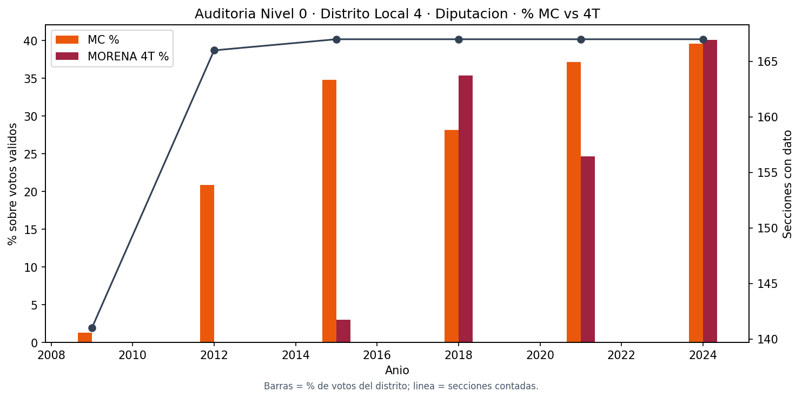
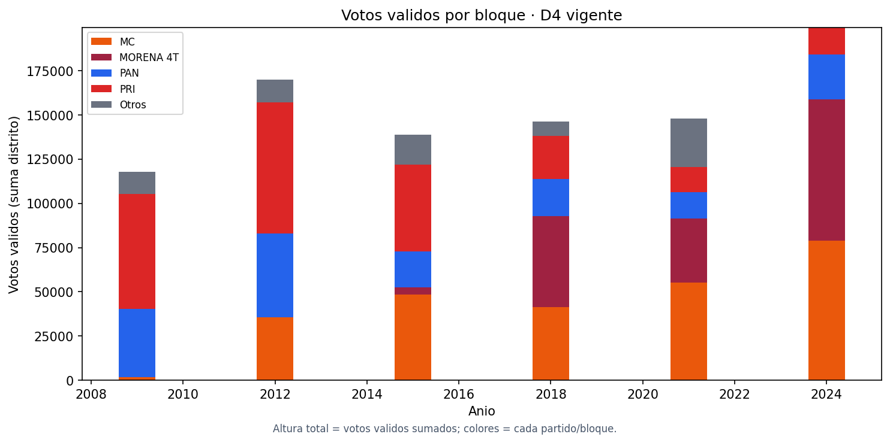
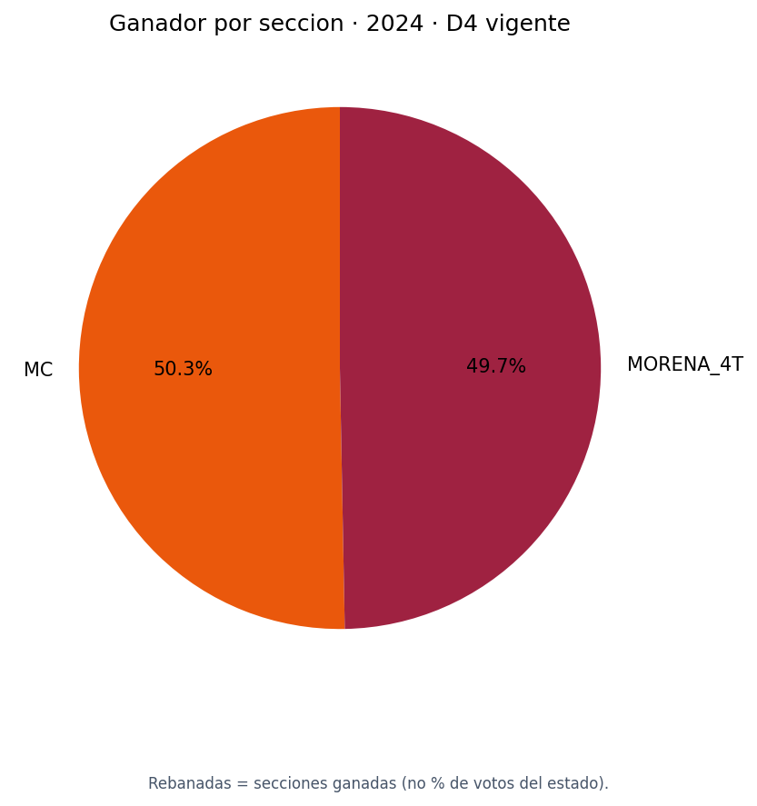
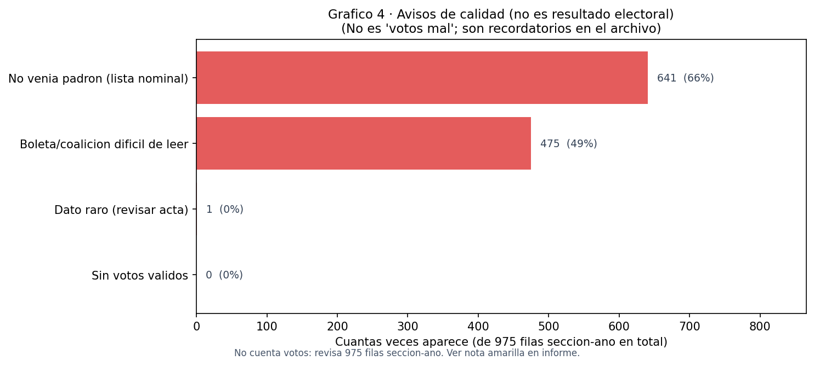
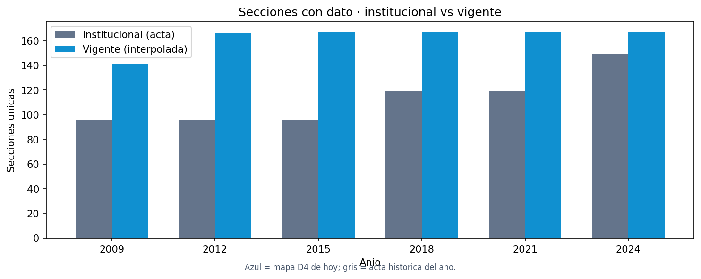

Estamos mirando solo el Distrito Local 4 (Zapopan y zona aledana en la cartografia vigente), cargo diputado local, usando datos oficiales ya limpiados.
En 2024 hubo 167 secciones con datos. Sumando todo el distrito, Movimiento Ciudadano (MC) obtuvo aprox. 39.5% de los votos validos y la coalicion MORENA-4T aprox. 40.1% — casi empate en votos totales.
Pero si cuentas 'quien gano cada casilla/seccion' (mini-territorios), MC gano 84 secciones y MORENA-4T gano 83. Eso puede ser 84 vs 83 aunque los porcentajes totales sean parejos.
Los graficos de abajo cuentan la misma historia año por año. Las 'banderas' al final son avisos de datos raros en actas; no cambian el ganador por si solas.
Cada figura va seguida de una nota en caja amarilla. No hace falta ser experto: lee Que es, luego Como leerlo, luego En plano.

Que es: Barras naranja = porcentaje de MC; barras vino = porcentaje MORENA-4T; linea gris = cuantas secciones sumamos ese año.
Como leerlo: Mira de izquierda a derecha (2009 → 2024). Si una barra sube, ese bloque se llevo mas proporcion del pastel de votos validos del distrito entero ese año.
En plano: MC casi no aparece en 2009 (barra bajita). Crece hasta 2015–2021. MORENA-4T despega fuerte en 2018 (cuando ya compite como bloque homologado). En 2024 las dos barras miden casi lo mismo (39.5% vs 40.1%) — carrera muy cerrada a nivel distrito.
La linea gris: Si en un año hay menos de 167 secciones, faltan pedazos del mapa actual (años viejos antes del redistritaje); no es que 'faltaran votos', sino que ese territorio pertenecia a otro distrito en esa epoca.

Que es: Cada columna es un año; la altura total es todos los votos validos del D4; colores = PAN, PRI, Otros, MC y MORENA-4T apilados.
Como leerlo: Columna mas alta = año con mas votos validos en total (mas gente voto o crecio el padron). El color que 'come' mas espacio es el bloque con mas votos ese año.
En plano: Arriba del todo suele dominar MC + MORENA-4T en años recientes; abajo quedan PAN/PRI/Otros. Sirve para ver no solo el duelo MC–4T sino donde se fueron los votos del resto de partidos.

Que es: Pastel de 2024: cada rebanada = cuantas secciones gano cada bloque (gana quien tuvo mas votos en esa seccion).
Como leerlo: MC 84 rebanadas vs MORENA-4T 83 — casi mitad y mitad del territorio en 'mini-elecciones' locales.
No confundir: Esto NO es 'MC tuvo 50% de votos en Jalisco'. Es solo conteo de secciones ganadas dentro del D4. Los porcentajes de votos reales estan en el grafico 1.

Que es: NO es un grafico de votos ni de quien gano. Es un chequeo del archivo: tenemos 975 'filas' en total (cada fila = una seccion en un año de eleccion, solo diputado D4). El sistema pone etiquetas cuando algo falta o es confuso en la acta.
Como leerlo: Cada barra dice 'en cuantas filas aparecio este aviso'. El numero entre parentesis es de esas filas totales. Ejemplo: 641 (66%) significa que en 66 de cada 100 filas no venia lista nominal (padron) en la fuente original — tipico en elecciones viejas, no significa fraude. 475 (49%) = boleta con coaliciones donde repartir votos a MC/4T es mas trabajoso. {n_out:,} fila(s) = numeros de acta raros (revisar a mano).
En plano: Imagina 975 hojas de Excel (sección × año). 641 hojas dicen 'no traigo padron'; 475 dicen 'boleta complicada'; 1 dice 'ojo, numeros raros'. Igual usamos los votos de esas hojas en los graficos 1–3; solo sabemos que hay que interpretar con cuidado.
No confundir: Barra grande NO quiere decir 'MC perdio esas secciones'. No habla de ganadores; solo de calidad del registro electoral.

Que es: Comparacion de cuantas secciones entran al analisis cada año. Gris = corte institucional (como decia el acta de ese año); azul = corte vigente (mapa D4 de hoy).
Como leerlo: Cuando las barras azules llegan a 167, ya tienes el distrito completo actual. Gris mas bajo en años viejos = parte del territorio de hoy votaba en otro distrito entonces.
En plano: En total hay 975 filas vigentes vs 675 institucionales en la base — la campana usa el corte azul para hablar siempre del mismo D4 de 167 secciones.
Cada fila es un año de eleccion. No es una persona: es la suma de todas las secciones del D4.
• anio: año de la elección. • secciones: cuantas secciones electorales entran en el conteo ese año (167 es el D4 completo hoy). • validos: total de votos validos sumados en todo el distrito (numero grande, no porcentaje). • pct_mc / pct_4t: de cada 100 votos validos del distrito, cuantos fueron para MC o para MORENA-4T. • outliers: cuantas secciones-año tuvieron un dato sospechoso (ver glosario); en 2021 aparece 1.
| anio | secciones | validos | mc | m4t | pan | pri | otros | outliers | pct_mc | pct_4t |
|---|---|---|---|---|---|---|---|---|---|---|
| 2009 | 141 | 117,973.00 | 1,552.00 | 0.00 | 38,889.00 | 65,011.00 | 12,521.00 | 0 | 1.32 | 0.00 |
| 2012 | 166 | 170,191.00 | 35,456.00 | 0.00 | 47,428.00 | 74,334.00 | 12,976.00 | 0 | 20.83 | 0.00 |
| 2015 | 167 | 138,736.00 | 48,295.00 | 4,145.00 | 20,503.00 | 48,954.00 | 16,830.00 | 0 | 34.81 | 2.99 |
| 2018 | 167 | 146,470.00 | 41,191.00 | 51,768.00 | 20,758.00 | 24,431.00 | 8,323.00 | 0 | 28.12 | 35.34 |
| 2021 | 167 | 148,074.00 | 55,042.00 | 36,511.00 | 14,845.00 | 14,157.00 | 27,529.00 | 1 | 37.17 | 24.66 |
| 2024 | 167 | 199,489.00 | 78,900.00 | 79,955.00 | 25,308.00 | 15,330.00 | 0.00 | 0 | 39.55 | 40.08 |
En 2024 hay 167 secciones en el D4 vigente. Por cada una se mira quien tuvo mas votos: — MC: 84 secciones (50.3% del territorio en piezas). — MORENA_4T: 83 secciones (49.7% del territorio en piezas). Importante: ganar mas secciones no siempre significa mas votos en total; se puede ganar muchas secciones chicas y perder en votos si el rival gana secciones muy pobladas.
| secciones | |
|---|---|
| ganador_bloque | |
| MC | 84 |
| MORENA_4T | 83 |
Piensa en esto como 'alarmas suaves' en los datos. El numero dice cuantas veces aparecio esa alarma en alguna seccion y año del D4.
| flag | n |
|---|---|
| flag_outlier | 1 |
| flag_datos_incompletos | 0 |
| flag_coalicion_compleja | 475 |
| flag_lista_nominal_faltante | 641 |
Este informe en salida/ combina tres capas: (1) gráficos y narrativa del Distrito Local 4 (diputado) para campaña; (2) entregables y pruebas del PDF «Nivel 0» (analisis/Instrucciones v1/Instrucciones v1/Nivel 0.pdf) ya materializados en analisis/nivel0/ por electoral_nivel0.py; (3) pruebas adicionales solo sobre el subconjunto D4 vigente que alimenta los gráficos. Los colores estratégicos (azul/dorado/naranja…) del PDF §0.1 corresponden al Nivel 1+, no a esta auditoría.
| entregable_pdf_0_7 | archivos_en_repo | estado |
|---|---|---|
| Base maestra electoral limpia | base_maestra_largo.csv (478,280 filas); base_seccion_anio.csv (53,416 filas) | Presente |
| Diccionario de datos | diccionario_datos.md | Presente |
| Catálogo de elecciones comparables | catalogo_elecciones.csv (15 filas) | Presente |
| Tabla de homologación partidaria | homologacion_partidos_bloques.csv (142 filas) | Presente |
| Reporte de calidad de datos | reporte_calidad.md; reporte_anomalias.csv (1,213 filas) | Presente |
| Inventario de fuentes | inventario_fuentes.csv (16 filas) | Presente |
| Catálogo territorial | catalogo_secciones.csv (4,245 filas) | Presente |
| Bitácora metodológica | bitacora_metodologica.md | Presente |
| Serie remapeada (N0.5) | base_seccion_anio_interpolada.csv (59,163 filas) | Presente |
| Prueba | Criterio | Resultado |
|---|---|---|
| Secciones únicas | Sin duplicados por sección+año+cargo | OK |
| Totales consistentes | válidos+nulos+no_reg ≈ total | 1110 filas con diferencia (2.08%) |
| Lista nominal válida | sin cero/negativo injustificado | 0 secciones-año-cargo con LN cero |
| Participación válida | entre 0% y 100% | 26 fuera de rango (0.05%) |
| Bloques homologados | todo partido tiene bloque | OK |
| Elecciones clasificadas | tipo, año, cargo, comparabilidad | OK (15/15) |
| Geografía consistente | sección en cartografía actual | 1595 secciones-año-cargo sin cartografía |
| Redistritación | distrito local estable entre años | 1704 secciones cambiaron de distrito (ver catálogo) |
| Secciones sin histórico | identificadas y separadas | 655 secciones |
Complemento local: mismas banderas, filtradas al distrito 4 con cartografía vigente.
| prueba | criterio | resultado |
|---|---|---|
| Secciones únicas (D4 vigente) | Una fila por sección+año (diputado) | OK |
| Filas D4 vigente | Serie usada en gráficos 1–5 | 975 filas |
| Outliers marcados | flag_outlier = 1 (PDF §0.10) | 1 fila(s) |
| Datos incompletos | flag_datos_incompletos = 1 | 0 fila(s) |
| Secciones 2024 | Cartografía D4 completa (167) | 167 secciones |
El Nivel 0 del pipeline v3 es la capa de hechos electorales limpios: votos por seccion, año y cargo, homologados a bloques (MC, MORENA 4T, PAN, PRI, OTROS). No incluye indices estrategicos (eso empieza en N1–N5). Aqui auditamos que los archivos del repo sean coherentes y que el Distrito Local 4 (D4) tenga una serie interpretable para diputacion de mayoria relativa.
• historial_partidos.csv: 456,167 filas — Registro largo por partido (limpieza N0) • base_maestra_largo.csv: 478,280 filas — Maestra homologada a bloques • base_seccion_anio.csv: 53,416 filas — Acta agregada seccion x anio x cargo • base_seccion_anio_interpolada.csv: 59,163 filas — Serie remapeada a demarcacion vigente (N0.5) • catalogo_secciones.csv: 4,245 filas — Catalogo territorial 2024
En total, base_seccion_anio tiene 53,416 filas (todas las demarcaciones y cargos agregados). La interpolada (N0.5) tiene 59,163 filas porque reasigna historicos a la cartografia vigente (distrito_local_vigente).
Institucional: distrito_local_del_anio == 4 en el acta de cada eleccion (como estaba en urna ese año). Vigente (producto): distrito_local_vigente == 4 en base_seccion_anio_interpolada.csv (167 secciones desde 2015; 2009–2012 parciales por redistritacion). Para diputado, filas D4 institucional: 675; filas D4 vigente: 975. Para narrativa de campana y mapas D4 se usa la serie vigente.
• Diputacion local de mayoria relativa: 21,296 filas en 6 años. • Presidente municipal / Alcalde: 21,294 filas en 6 años. • Gobernador del estado: 10,826 filas en 3 años.
Los porcentajes pct_mc y pct_4t son votos del bloque sobre la suma de votos validos del distrito en ese año (no es 'cuantos votaron del padron'; eso seria participacion). Antes de 2018 MORENA 4T aparece bajo o en cero porque el bloque se arma con reglas de coalicion del pipeline v3. Entre 2018 y 2024 sube la competencia MC vs 4T; en 2024 los votos validos agregados reflejan la eleccion mas reciente con cartografia completa. La columna outliers en la tabla resume cuantas filas (sección-año) quedaron marcadas como outlier en ese año (ver glosario).
Cada fila de 2024 trae ganador_bloque: el bloque (MC, MORENA_4T, etc.) que mas votos validos obtuvo en esa seccion. Contar secciones ganadas no es lo mismo que contar votos totales del distrito; por eso puede haber empate tecnico (84 vs 83 secciones) aunque los porcentajes agregados de votos esten muy parejos.
Bloque homologado: agrupacion de partidos/coaliciones para comparar en el tiempo (MC, MORENA 4T, PAN, PRI, OTROS). No es el nombre del partido en boleta, sino la etiqueta analitica despues de limpiar datos.
Votos validos: votos que cuentan para el resultado (sin nulos ni no registrados). Los porcentajes pct_mc / pct_4t dividen votos del bloque entre la suma de validos.
Flag (bandera): columna si/no (1 o 0) que avisa un problema o una condicion especial en esa fila. No borra el dato; solo dice 'revisar con cuidado' o 'contexto raro'.
Outlier (valor atipico): en N0, flag_outlier = 1 cuando hay una anomalia 'dura': participacion imposible (>100%), totales que no cuadran (validos+nulos+no registrados muy distintos del total), o cero votos validos. Es una fila sospechosa de acta o de captura, no un juicio politico.
flag_participacion_anomala: votos totales mayores que lista nominal (mas del 100% de participacion).
flag_totales_inconsistentes: la suma de componentes no coincide con el total de urna mas alla de una tolerancia pequena.
flag_datos_incompletos: no hay votos validos en esa sección-año-cargo.
flag_coalicion_compleja: en esa eleccion hubo marcas o reparto de votos entre bloques dificil de leer (coaliciones cruzadas); el dato se conserva pero el desglose exige mirar catalogo de coaliciones.
flag_lista_nominal_faltante: la fuente original no traia lista nominal; participacion no se puede calcular con rigor.
Institucional vs vigente: institucional = distrito en el acta de ese año; vigente = secciones reasignadas al mapa electoral actual (interpolada N0.5) para contar siempre las mismas 167 secciones del D4 de hoy.
Interpolada (N0.5): CSV base_seccion_anio_interpolada.csv; remapea historico al distrito_local_vigente. Es la serie que usa la app para historia del D4 en mapas.
Los conteos suman cuantas filas del D4 vigente tienen cada flag en 1. Muchas flag_lista_nominal_faltante en años viejos es normal (fuentes sin padron). flag_coalicion_compleja alto indica elecciones donde MC/4T no se leen como un solo partido en boleta. Un outlier aislado (p. ej. 1 fila en 2021) conviene cruzarlo con reporte_anomalias.csv en analisis/nivel0/ si se quiere la seccion exacta.
Nivel 0 es una capa de tablas (CSV): numeros por seccion, sin geometria. Los mapas necesitan poligonos de seccion (shapefile / PostGIS geo_geofeature) y un paso que una clave seccion + atributo electoral → color en el mapa. Eso ocurre en otros artefactos: capas 'Resultados electorales' en PostGIS, scripts mapas_presentacion_d4.py (analisis/presentacion-d4/), electoral_secciones.json en el backend, y niveles superiores cuando ya hay scores (N3–N5). Esta auditoria N0 responde: 'los archivos base cuadran y la serie D4 diputado se entiende en numeros'. Los mapas D4 de campana se auditan aparte (geometria + pintado), no dentro del CSV puro de N0. Si quieres mapas en una carpeta auditoria/, el siguiente paso seria una hoja 'N0 + cartografia' que cruce catalogo_secciones con la capa SECCION y genere un mapa de ganador 2024 por seccion.
La auditoria confirma lectura local de N0: archivos presentes, filtros D4 reproducibles y graficos alineados con la presentacion D4 en cifras. Siguiente paso natural: N1 (electoral_nivel1) y, si se desea mapa en informe, modulo de cruce con geometria. PostGIS puede desactualizar nombres de columnas respecto al CSV v3; la fuente de verdad para esta revision es analisis/nivel0/.